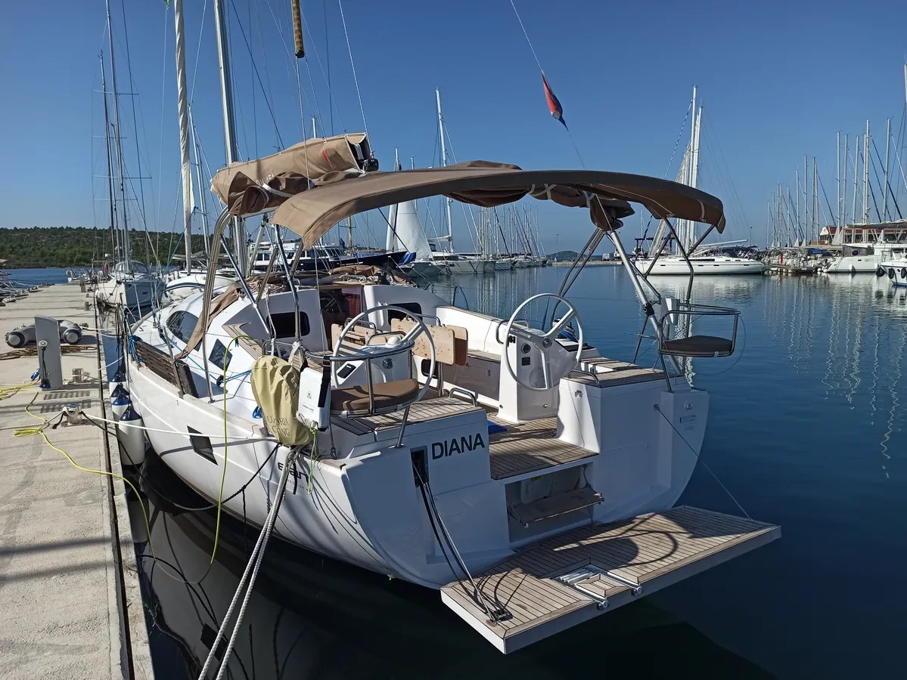

Купальная платформа Elan 45.1: двойка по физике и неуд по химии конструкторам верфи
Разбор критической ошибки гальванической пары металлов в механизме откидной платформы. Электрохимическая теория процесса разрушения алюминия, методы аварийного восстановления резьбы и пошаговый капремонт с барьерами Tef-Gel.
🧪 Урок физики и химии для производителя: что здесь произошло
Ситуация, когда стальной винт крепления ролика вкручен напрямую в алюминиевую пластину в агрессивной морской среде — это хрестоматийный пример создания разрушительной гальванической пары. На верфи Elan, видимо, решительно прогуляли эти лекции, за что теперь приходится расплачиваться владельцам чартерных бортов. Суть разрушительного процесса под водой проста:
- Разность потенциалов: У алюминия и нержавеющей стали абсолютно разный электрохимический потенциал. Алюминий гораздо активнее. В соленой морской воде, которая выступает идеальным электролитом, потенциал алюминия составляет примерно -760 мВ, в то время как у нержавеющей стали он колеблется около -100...+200 мВ. Эта колоссальная разница почти в 1000 мВ и запускает коррозию.
- Гальваническая батарейка: Соединяясь напрямую, два металла образуют замкнутый контур. Алюминий в этой паре становится анодом и начинает принудительно жертвовать собой, окисляясь в рыхлый белый порошок.
- Соотношение площадей: Ситуацию усугубляет критическое соотношение площадей. Крошечный анод (резьбовое отверстие в алюминии) вынужден обслуживать огромный катод (стальной винт). Коррозия в точке контакта идет лавинообразно, резьба полностью исчезает, и весь силовой ролик платформы вываливается наружу.

🛠️ План спасения: от скорой помощи до капремонта
В зависимости от того, где застала вас эта поломка — на базе во время межсезонья или посреди чартерной недели на косой волне, действовать нужно по двум стратегиям:
Этап 1. Экстренная помощь посреди сезона:
Если резьба в алюминии полностью уничтожена, а платформой нужно пользоваться, аккуратно рассверлите отверстие. Установите резьбовую вставку из нержавеющей стали (типа Helicoil). Винт вставки обязательно посадите на анаэробный фиксатор высокой прочности (например, Loctite 2701), чтобы изолировать витки от алюминия. Другой быстрый вариант — рассверлить отверстие с запасом, заполнить его металлонаполненным эпоксидным компаундом (Devcon Plastic Steel Putty) и после полимеризации нарезать резьбу заново в этом химически инертном полимерном основании.
Этап 2. Капитальный ремонт по уму и правильная профилактика:
Чтобы исправить косяк инженеров раз и навсегда, нужно полностью ликвидировать прямой контакт между алюминием и сталью А4. Полностью демонтируйте узел и вычистите щеткой весь белый налет оксида. Приобретите нейлоновые изолирующие втулки (плечевые шайбы) и EPDM-прокладки под головки винтов. Перед сборкой обильно, не жалея, нанесите на резьбу и внутреннюю полость втулок специализированную ПТФЭ-пасту Tef-Gel или антикоррозийный состав Duralac. Компоненты Tef-Gel намертво блокируют доступ соленой воды к резьбе, разрывают электрическую цепь и предотвращают закисание металлов. Снаружи узел дополнительно герметизируется полиуретановым морским герметиком Sikaflex-291.
💡 Дополнительные меры и дизайн против коррозии
При капремонте убедитесь, что в конструкции откидного механизма нет слепых зон, где морская вода может застаиваться днями. Если есть возможность, просверлите дополнительные дренажные отверстия в нижней части профиля. В долгосрочной перспективе лучшим инженерным решением будет полная замена ответной алюминиевой пластины на аналогичную деталь, вырезанную из нержавеющей стали AISI 316. Нет разных металлов — нет электрохимической батарейки.
🧰 Комплект спасения для владельца чартерной лодки
Чтобы этот дефект не застал вас врасплох на систершипах, сформируйте в бортовом ремнаборе постоянный комплект: тюбик или шприц оригинального Tef-Gel, набор нейлоновых шайб и изолирующих плечевых втулок разных диаметров, полиуретановый Sikaflex, рулон бутилкаучуковой ленты, запасной нержавеющий крепеж AISI 316 (класс А4) и брусок двухкомпонентной «холодной сварки» для экстренного восстановления резьбовых гнезд.
💎 Резюме
Данная поломка — чистый результат конструкторской халатности проектировщиков верфи, а не естественный износ. Но узел полностью доводится до ума с помощью современных изоляционных материалов. Защитив резьбу один раз по шкиперскому стандарту, вы закроете этот вопрос на годы, а доходы от чартера Elan 45.1 будут уходить не на ликвидацию белых окислов, а на хорошее шампанское после победных гонок.